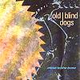

Celtic Lyrics Corner > Artists & Groups > Old Blind Dogs > Close To The Bone > The Twa Corbies
|  | The Twa Corbies |
| Credits : | Traditional; arranged by Old Blind Dogs |
| Appears On : | Close To The Bone ; Live |
| Language : | Scots-English |
| Other Versions : |
"
An Dà Fheannaig
" on Kathleen MacInnes' album
Òg-Mhadainn Shamhraidh
" Three Ravens " on Malinky's album 3 Ravens |
Lyrics :
As I was walking, oh a' my lane
I spied twa corbies, they were makin' mane
And een ontae the other did say
"Where will we gang? Will we dine the day?
Where will we gang? Will we dine the day?"
It's in ahind yon oul fail dyke
I wot there lies, oh a new-slain knight
Naebody kens that he lies there
But his hawk, his hound and his lady fair
His hawk, his hound and his lady fair
His hawk is tae the hunting gane
His hound, to bring a' wild fowl hame
His lady's ta'en another mate
So we can mak' our dinner sweet
So we can mak' our dinner sweet
It's you'll sit on his white horse bane
And I'll pick out his bonny blue e'en
Wi' a lock of his gowden hair
We'll thak our nest fan it grows bare
We'll thak our nest fan it grows bare
There's mony's an ane now for him makes mane
But naebody kens where he has gane
Through his bare bones as they lie bare
The wind will blow aye forever mare
The wind will blow aye forever mare